~6-Loft~
8/4/2025
Why are we on Loft instead of G Stretch?
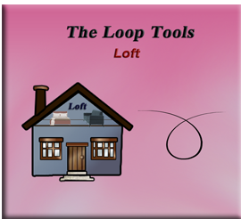
Why are we on Loft instead of G Stretch?
I know you are probably wondering what happened to that last lesson on G Stretch, and why we are skipping it, and going straight on through to this tutorial on the Loft tool. Well although, Loop tools are a fantastic add-on in most cases, because it is a 3rd party tool, and not maintained by the Blender team itself, things can get a bit buggy when Blender decides to massively update some things; so sometimes these third parties like, the Loop Tool’s company, has not quit got it all-together yet and caught up.
This is the case with G Stretch. G stretch relies enormously on either the Annotation tool, or the G pencil tool, for it to work. This is a difference between this tool and the other tools in this arsenal. So, the problem here lies in the fact that Blender has tremendously updated these drawing tools, and so now Loop tool does not any longer know how to connect to them. This is a problem, and the reason why (for now) we are skipping over the G stretch tool, and going on to the next tool, which is: Loft.
What is the Loft Tool?
The Loft tool is kind of like the bridge tool, and so it will also take some mesh shapes, and attempt to make a bridge, or loft between the objects. The loft tool and the bridge tool are very similar. They are so similar that they will share the same Last Operation dialog box at the bottom of the screen. Be careful, because when you are changing the settings for one, you are also changing the settings for bridge tool, which as you remember is the first tool in this Loop tool treasure chest.
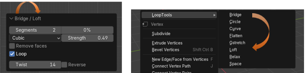Prepping the Objects
Let’s start by adding some Circles to the viewport, so we have something to work with
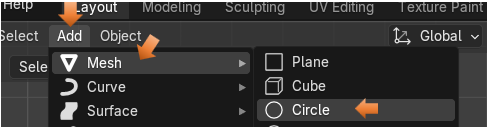If you added it in front view, you will need to rotate the object 90° on the X axis to make it stand up. Make sure you are in the Rotation setting, and not in Location setting, or your object will go flying off of the screen.
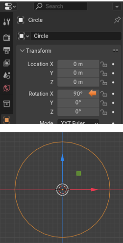Hit the 3 key on the numpad, so that it will turn this circle; now we can look at it from its side view. We want to then hit the Shift – D key to duplicate your first circle to make several more. Since this Loft tool can be very finicky, we will want to hit the M key to move the object and then hit the Y key to constrain the movement to the Y axis. We are looking at these circles from the side, so they should look like thin straight lines. But we need to make that constraining move to keep everything in a perfectly straight line.
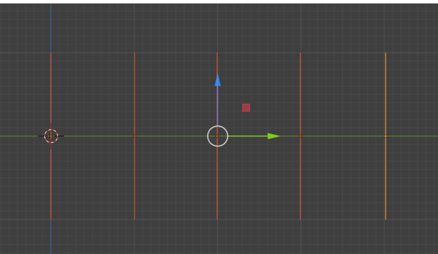Joining Objects Together
This is one of the got-cha things in Blender, whereas if you do not do it, you will never get anywhere except driven crazy.
When you are working with multiple objects in Blender, they MUST be joined together before leaving object mode to enter Edit mode. So, while still in Object mode, make sure that you select all of the objects that you want to work with. Then hit CTRL-J and join them together.

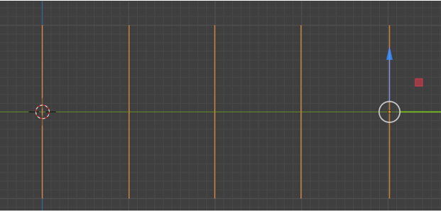
You will know they are joined together, because these circles will all turn orange. Instead of one circle being orange, and the rest of them being a red color.
Starting to Loft the Objects
Now we can enter Edit Mode
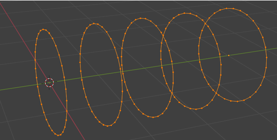With all of the circles selected, right click and select Loft from the Loop Tool section.
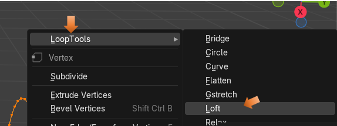
Ok, well this is what mine looked like after hitting that Loft button, but yours might look different depending on what your settings have started out with for this tool. It will usually give us (by default) some weird settings, and we will need to straight this mess out.
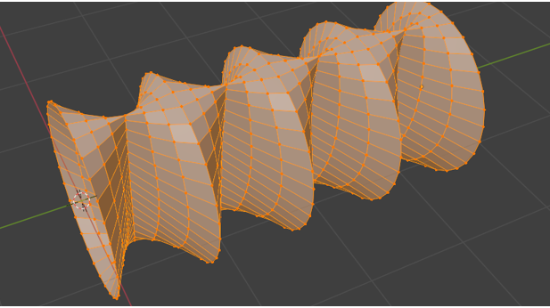This is the settings that I was given, and this is why things are weird.
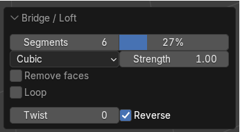We want to change these settings to this. Unchecking that Reverse checkbox can really make a difference.
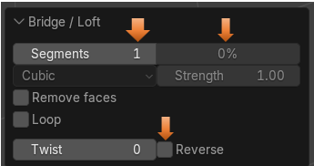Now it looks like this
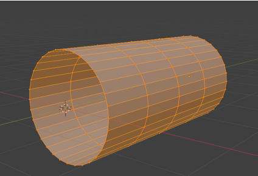
Once we get it straightened out, you can start to add more segments to it.
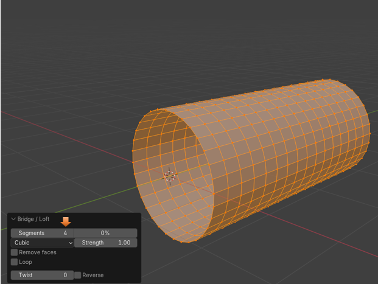
You can even try and twist it.
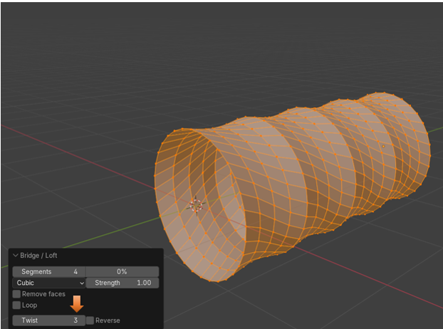But if you throw in that Reverse check box, you get a mess.
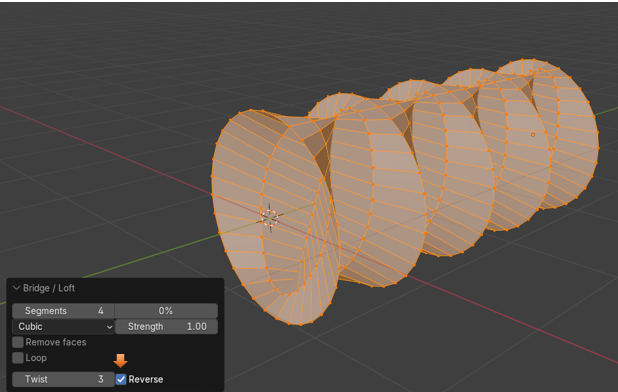However, as you can see from this next image, these following settings seem to be the best. We could even go with less segments and get better optimization. Then if we try to animate it, it would react faster. Especially if your scene was quite complex, with other objects that weighed your animation down.
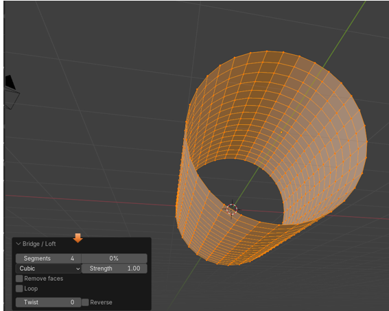So, I guess that is about it for this one. Start lofting a few of your own objects and see what you can come up with.